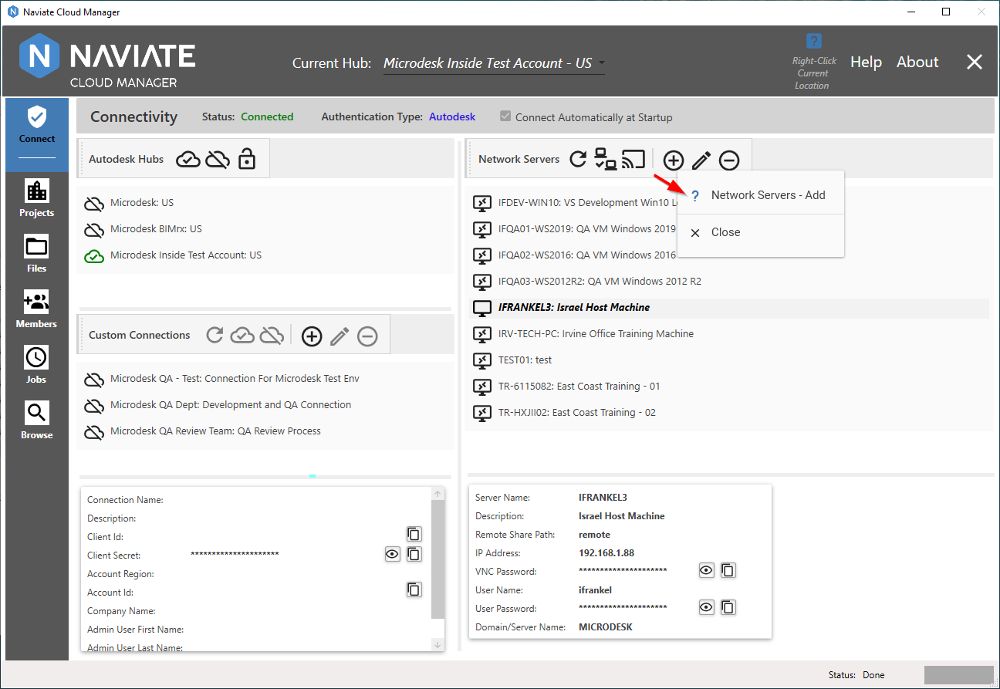
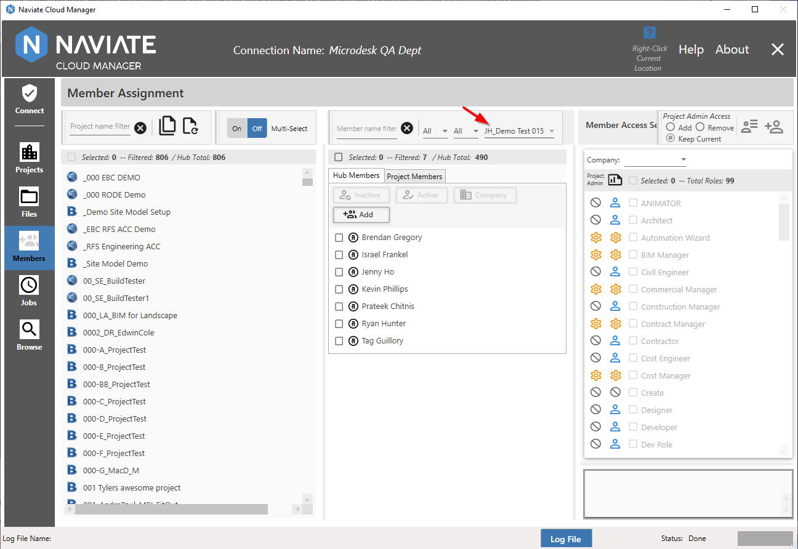
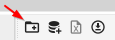

New Features
Current General Release: Naviate v2.10.5.5
The v2.10.n releases contain the following new features:
Cloud Manager Re-branding
BIMrx® Cloud Manager has been renamed and from this point on will be known as Naviate Cloud Manager. This change affects only the application name, logo and colors. It has no impact on it's features or functionality, which all remain the same. The Naviate-branded Cloud Manager has, in fact, been appearing in User Guide screen shots for some time now, so regular readers should not be surprised. This change has come about as part of the Microdesk/Naviate merger.
Autodesk S3 Upload/Download Support
This release supports these new Autodesk® S3 upload/download internal APIs to take advantage of improved upload and download speed. These new APIs provide direct access to the Amazon S3 server Autodesk® uses to store BIM 360® data.
Please Note — As of now, support for uploading files larger in size than 18Gb is not supported. If this is a problem, please notify Symetri.
Revised and Streamlined Email
Naviate Cloud Manager now utilizes SendGrid® internally for sending notification emails. This eliminates the need for the additional setup and configuration required by the previous SMTP-based email system.
Email Configuration settings are now read automatically when the application starts — they may be used as is and the system will send emails without any further intervention. If, however, it is necessary or desired to change them, this can easily be done by editing the C:\Program Files\Microdesk BIMrx Cloud Manager\CloudManagerAgent.exe.config file.
The Email Configuration settings dialog box (accessed by pressing the button as shown below) has been revised, reflecting the reduced number of fields now required for sending emails.
The default settings that are initially created by the system are as follows:
- Email From Address: BIMrxAlerts@microdesk.com
- Email From Display Name: Naviate Cloud Manager Notifications
For more information, please refer to the updated User Guide entry at Email Configuration.
Context Aware Help
Naviate Cloud Manager now features a comprehensive context aware help system. Wherever you are in the application, simply right click on a button, data list or other control, and a help menu is generally available.

Clicking on the item in the Help menu opens up the User Guide and navigates to the selected location.

From here, the user may navigate wherever they require within the User Guide. It is no different than if they has pressed the standard Help button.
Additionally, please note the Context Help availability indicator.

Whenever there is Context Help available at the current cursor location, the Context Help Availability Indicator is enabled. This makes it easy to know whenever Context Help is available at the current cursor location. It is often available even when a control is disabled, so be sure to watch for it. The exception is when certain operations are taking place, such as accessing Job Listing Help while editing a Job Description. Therefore, always be sure to check the indicator. If it is not currently available for a disabled item, it will likely become available once the edit, processing or other operation is complete.
User Guide Glossary
The new Glossary provides definitions of common terms as used in the AEC Industry. These definitions are available via browse and look-up standard reference:

Often, Glossary entries will include a link to an external resource. This is done by simply pressing the hyperlink, as shown above.
In this case, additional Autodesk® help on the topic is referenced.
Additionally, Glossary entries can be accessed directly from Naviate Cloud Manager where appropriate.
Introduction of Proprietary Cloud-based APIs
Initial release of the new Naviate Cloud Manager proprietary cloud-based APIs. These APIs--used internally--consolidate and simplify access to the Autodesk® Forge® APIs for the developer in a uniform, consistent and coherent manner. This approach improves system performance, troubleshooting, security and development time. This initial release replaces previous direct calls in several areas. Future releases will incorporate migration of remaining, existing functionality to the new platform. Going forward, all new features will be implemented via this new, API platform.
Full Support for 64-bit Processing
Previously, Naviate Cloud Manager performed some processing operations as 64-bit and some as 32-bit. In the interest of speed — and the ability to process large files (i.e., those larger than 4 Gigabytes in size) — the application now requires a 64-bit processor. This should not present a problem since Microsoft Windows 10 and most (if not all) modern computers are based on the 64-bit standard.
Note — If, for whatever reason, Naviate Cloud Manager must run in a 32-bit environment, please notify the Naviate Cloud Manager Support Team, who will be happy to provide a 32-bit compatible version. But also please note, there will be the limitation in maximum file size and general performance referred to above.
Enforcement of Admin Security for creation of Projects.
Only those users having a Hub Access Level of Account Admin are now allowed to go to the Projects module.
Enforcement of Admin or Project Security for Members.
Users having Project Member status are now restricted from accessing the Members module. This means that only users having Account Admin or Project Admin privileges can access the Members data and features provided in Naviate Cloud module.
When the user clicks on the Members module, the application checks to verify their access level. If they have neither Account Admin access nor Project Admin access for at least one project, then they are not able to enter the module. Otherwise, they are granted access according to the following rules:
- Account Admin: Shows all projects for the current hub.
- Project Admin: Shows only those hub projects for which Project Admin access has been granted.
Masked Passwords on Data Entry Screens
Fields containing passwords are now masked for normal data entry and viewing.
However, pressing the Reveal button located on the right side of these fields, displays the field's contents:
The actual value of the password field is displayed for as long as the Reveal button is depressed. Once it is released, the password value is again replaced with the '***' display.
Masked password fields have replaced the previous textbox fields in the following locations:
- Connect: Custom Connections — Forge App Client Secret field.
- Connect: Network Servers (shown above) — VNC and User Password fields. (Two fields)
- Jobs: Email Configuration settings — Email From Password field.
BIM 360®/Autodesk® Construction Cloud Project Awareness and Display
Whenever a project is Manager, the appropriate logo now appears to indicate whether it is a BIM 360® or ACC project.

Apart from displaying the For the Field top level folder, ACC projects appear and are handled the same as are BIM 360® projects.
The previous project logo  has been replaced everywhere (except on the Main Menu) with the new, project type-aware logos for BIM 360® and ACC
has been replaced everywhere (except on the Main Menu) with the new, project type-aware logos for BIM 360® and ACC  :
:
- Files: Local Projects display
- Files: Cloud Projects display
- Jobs: Project list display
- Jobs: Project detail/selection tree
- Members: Project listing
- Browse: Project listing
Download an Empty Project Template Spreadsheet
One of the most widely used and time-saving features of Naviate Cloud Manager is it's ability to add multiple projects into BIM 360 by entering the project data into a MS Excel spreadsheet and loading the spreadsheet into Naviate Cloud Manager. Previously, when looking for an empty Project Template Spreadsheet to use, users had to locate the original distribution archive file or copy and and re-purpose a previously filled-out template. However, now there is a simple and more readily-available option — downloading a new Project Template Spreadsheet.
While on the main Projects screen, all the user needs to do is press the Download an empty project template spreadsheet button.
Pressing the Download... button brings up the familiar MS Windows File Save dialog box.
This dialog assists the user in assigning a name and choosing a location to save the new project template file. For more general information regarding locating these templates see Getting a Project Template Spreadsheet. For more details regarding the project template download functionality, refer to Download New Spreadsheet from Projects Screen.
Enhanced filters to select Hub and Project Members
- Naviate Cloud Manager now provides member filters when working with Projects. These include the Member Name/Email text filter (see following); the Email dropdown list filter; and the new Role filter (see below). These filters are used for both both Single- and Multi-Select projects.
- The Member Name text filter has been enhanced to filter both the Member Name and Email address. As before, the filter is either full or partial text and is applied within the Member Name and/or Email address. For example, a single filter entry could produce a hit on one Member's name while also selecting a different Member's Email address.
- A Project Filter has been added to the filters available for selecting Hub Members. This new filter consists of a dropdown list containing all projects for the current Hub. Selecting a project from this dropdown list filters all Hub Members to include only those belonging to the selected project. This new feature makes it easy to select all members for a specific project then assign them to one or more additional projects.
- A Role Filter has also been added to the filters available for selecting both Hub and Project Members. This new filter consists of a dropdown list containing all roles for the current Hub. Selecting a role from this dropdown list filters all Hub or Project Members to include only those belonging to the selected role.
Selecting a project from the new project dropdown filter list filters all Hub Members to include only those belonging to the selected project.

Of course, this new filter may be used in combination with the other Hub Member filters.
Note: The Hub Member project filter makes it easy to select all members for a project then assign them to one or more additional projects.
Add Hub Members
Naviate Cloud Manager now also supports adding new Members to the currently selected Hub. These new Members can be added quickly and easily as required.

After pressing the new button, the following screen appears:

One or more Email Addresses are added by either typing them in or copying and pasting from another source. Pasting can be done by either using the supplied button, or by pressing <Control>V. As stated in the dialog window, entry of a Default Company and Role is required.
After pressing Add and once the new email addresses have been added, the new Hub Members appear on the Hub Member list with a status of Not Invited. This is because they have not yet been invited to a project. However, to assist in this process, all newly added Hub Members are automatically selected. This makes it easy to then assign a project and Import them. Once they are invited to at least one project, their Hub Members status changes to Active.
Note — You will probably need to Refresh the Hub Member list to display the updated Hub status after importing a newly added Hub Member to a Project for the first time.
Set/Update Hub Members Default Company
Naviate Cloud Manager now supports setting the Hub Member Default Project. This may be the first time a Default Company is set for the Hub Member, or it can involve changing it to a different company than the one currently assigned.
The process is simple. The user must select a Company to be the new Default Company. They must also select one or more Hub Members to whom the Default Company will be assigned. Pressing the Default Company button then performs the assignment.
A Company must be selected--assigning a blank company is not permitted. Assigning a company that is already assigned will safely skip the already-assigned Hub Member and continue.
Jobs Export Adds Support for Revit® 2023
All Naviate Cloud Manager Export Job Types — DWG, NWC and PDF — now support Revit® 2023.

Jobs Color Selection Added to Export PDF
When defining a Job Type of Export and PDF is selected for the Export Type, the user can now select the color depth type to be used--Blacklines, Grayscale or Color.

If Auto-Detect is selected then Naviate Cloud Manager will use the CM_PrintSettings stored with the Revit® model. When processing jobs that have not been updated to support Colors selection, the application defaults to Auto-Detect. When no CM_PrintSettings have been stored with the Revit® model then the PDF Export will be printed with Blacklines.
Jobs Token Refresh Job Status Indicators
Each Token Refresh Job now displays icons and a status message indicating the Job refresh token current state.
This means the user can easily see when the Token has expired:
or is close to expiration:
Finally, when the display has not yet been refreshed from the server, it provides the following display for the user:
This situation occurs when the system first starts up and either a Remote refresh has not been done (affects remote Token Refresh Jobs) or a Local refresh has not been done (affects local Token Refresh Jobs).
Jobs Provides Control Over Server Location Refresh Type Initial Setting
A new configuration setting has been added to provide the user control over the Server Location Refresh Type initial setting. By changing this setting to the desired preference, it ensures the initial setting — None, Local or Remote — is configured exactly the way you prefer. So when first entering the Jobs module, if, for example, you wanted to perform a Remote refresh, all that would be necessary would be to make this the default setting.
This setting is stored in the Naviate Cloud Manager configuration file, located at C:\Program Files\Naviate Cloud Manager\CloudManager.exe.config. To change the initial setting, open this file in any text editor, such as Notepad, for example, and edit the following entry:
Please note, the setting entered here only controls the initial setting when first entering the Jobs module. From that point on, the application responds as it always has, retaining whatever selection is made by the user and refreshing only under the circumstances laid out in general under Server Location Refresh Filter, and particularly relating to the conditions governing automatic refreshing by the system under Refresh Data From Task Scheduler.
As part of the implementation of this new feature, the default setting has now been changed to Local. As mentioned, this can be changed by editing the configuration file as discussed above.
Browse Projects Force Publish if No Syncs Since Last Publish
Naviate Cloud Manager now supports publishing of all Revit® Cloudshared Models — including those where no syncs were made on the main file since the last publish.
Also, as part of this update, two new menu items on the Project detail listing shown above has been added. Select the  menu item at any time to completely refresh the current project tree.
menu item at any time to completely refresh the current project tree.
When located on a folder, press the  menu item to refresh just the subfolders for the currently selected folder.
menu item to refresh just the subfolders for the currently selected folder.
These new refresh options are extremely useful to update the current tree-view display when publishing models.
Browse module enhanced help and workflow for upload of folders and files to BIM 360®
When invoking Update Project Database and Local Folder/File Repo:

The initial dialog window that now appears is much more informative:
It first explains how the local repository is used to update BIM 360®, in what manner the repository location is assigned and how it may be re-assigned or changed to a different location. It then describes the potential role of the project template in creating these local repositories.
Next, it describes via numbered steps precisely what occurs when the Update button is pressed, including the optional role of the Project Template in copying files.
Once the Update process has completed, the following new dialog window appears:

In addition to providing an explanation regarding the work just performed, a navigation button has been provided. This allows the user, with one press of the Go to Files button, to exit from the Browse module and go directly to Files. Additionally, once they arrive there, the MS Windows File Explorer is opened to the location of the selected Local File Repository folder.
Finally, logging has also been added to this operation. The log file is presented at the bottom of the screen and in the Log File popup:
Files module enhanced user experience for preparation and upload of folders and files to BIM 360®
When working in the Files module, it is often necessary to add new folders, change folder names, copy files, etc., using the MS Windows File Explorer. Naviate Cloud Manager now provides assistance via the new Open Repo button.
An Open Repo button is provided for each project selected. Pressing this button opens a new MS Windows File Explorer window that is automatically located in the local file repository for the selected project.

Finally, the tool tip wording on the button that initiates the upload process has been updated to be more explanatory.

Sort files to appear before folders in Project browser tree-view
When viewing a project hierarchy in the Browse and Files module, previously, each folder displayed first the folders and then the files. This could be confusing because the contents of an individual sub-folder appeared in between the folder and the folder's files. This ease of use issues has now been addressed:

When displaying the contents of a folder, Naviate Cloud Manager now displays all the files for a folder, then the folder's sub-folders. The application groups together the contents of each folder, without one or more sub-folders and their contents appearing in between a folder's files and sub-folders.
This approach has the additional benefit of presenting data in the same manner as typically displayed by the MS Windows environment:

Add logging to Update Project DB and Local Repo from Project Template and Update Project DB.
As noted above, the Update Project DB and Local Repo from Project Template update provides logging in the both the bottom screen display and the popup log viewer. The same information is also provided in the same manner when Update Project DB is performed: